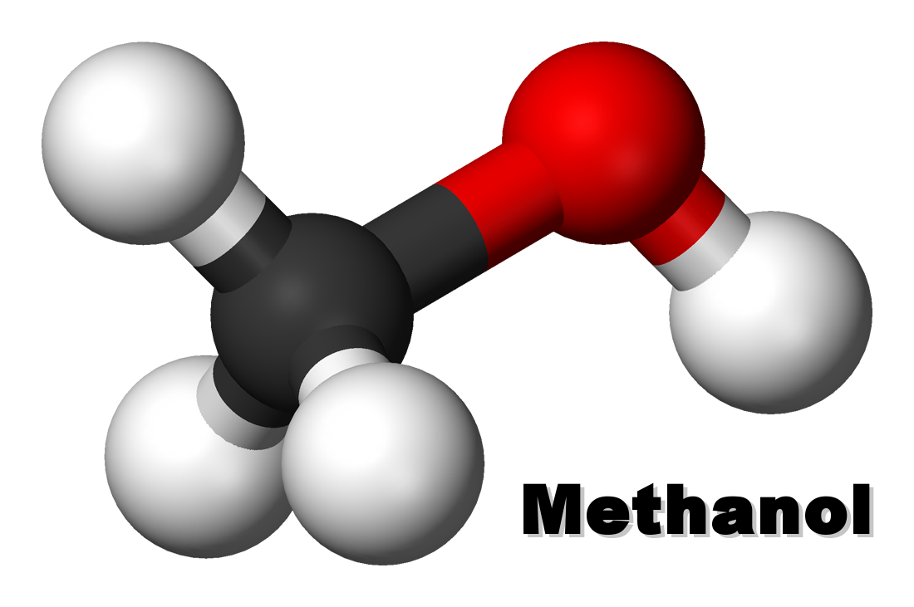

Methanol is also called wooden alcohol or wooden spirits as in ancient times made with dry distillation of sawdust (sawdust). Now methanol is made from the reaction of carbon monoxide (CO) gas with hydrogen gas (H2) with ZnO and Cr2O3 catalysts at temperatures ± 450 ° C and yields 200 atm.
Methanol acquired the name wood alcohol because it was once produced chiefly as a byproduct of the destructive distillation of wood. Today, industrial methanol is produced in a catalytic process directly from carbon monoxide, carbon dioxide, and hydrogen. Methanol is the simplest alcohol, being only a methyl group linked to a hydroxyl group. It is a light, volatile, colorless, flammable liquid with a distinctive odor very similar to that of ethanol (drinking alcohol).
CO + 2 H2 CH3OH
Methanol is a volatile, flammable, and easily soluble liquid in water. Methanol smells like ordinary alcohol but is very toxic. If inhalation of vapors long enough or exposed to the skin can damage the retina of the eye resulting in blindness and if
Ingestion can result in death.

Formic acid is also prepared in the form of its esters by treatment of carbon monoxide with an alcohol such as methanol (methyl alcohol) in the presence of a catalyst.
Methanol when drunk is metabolized first to formaldehyde and then to formic acid or formate salts.[13] These are poisonous to the central nervous system and may result in blindness, coma, and death. Because of these toxic properties, methanol is frequently used as a denaturant additive for ethanol manufactured for industrial uses.
This addition of methanol exempts industrial ethanol (commonly known as "denatured alcohol" or "methylated spirit") from liquor excise taxation in the US and some other countries.(Source:https://en.wikipedia.org/wiki/Methanol)